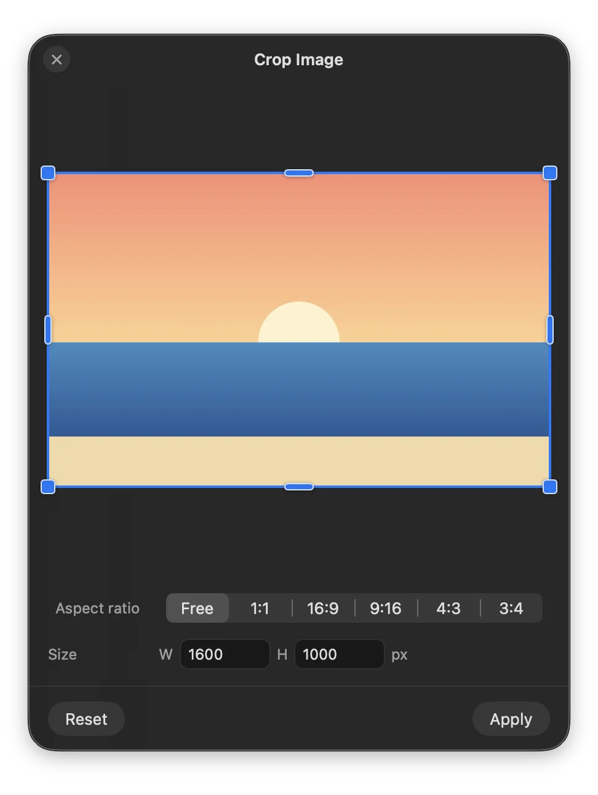
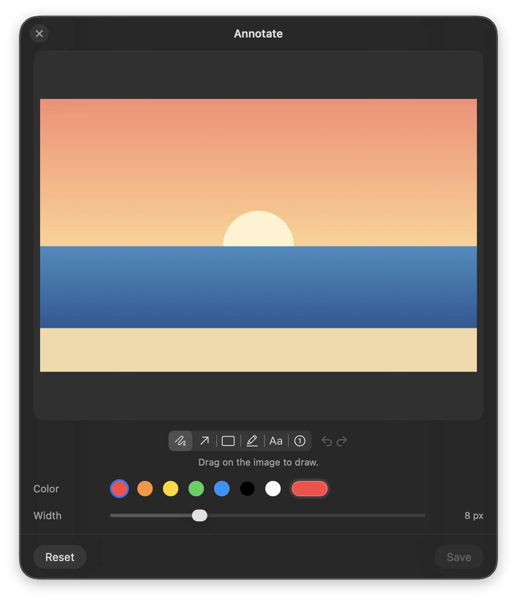
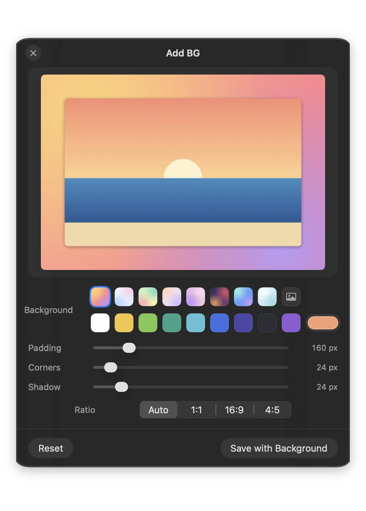

Quick editors
Crop, Annotate, Redact, Remove background, Resize, Compress. Each opens a small window by the file and saves a copy, like Photo Cropped.jpg, so you can drag the result straight into another wheel.


